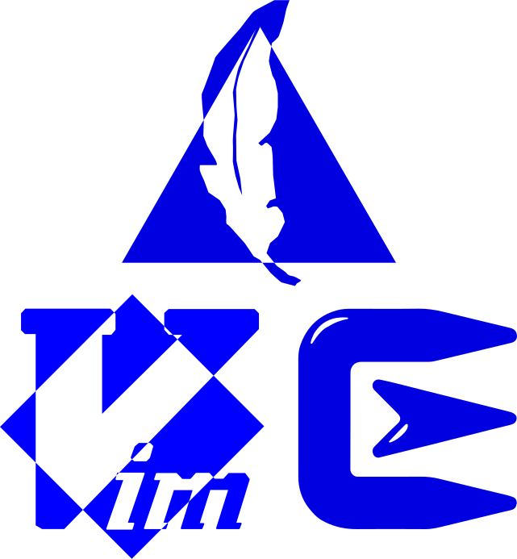

Developer's ToolKit - IT Developing Cheat Sheet
by Aaron, Ghada, Nice, Albeta and Brandon
Posted on Novemeber 9, 2017 at 12:00 PM

As a Technology Professionals have you all ever wondered what programs would make your life easier as you type, click,
program and command your way to being technically savvy!
WE GOT A SOLUTION FOR YOU! ToolKit for Developers:
4 Cool Tools for you to try, enjoy and help you along your journey.
typingclub.com
typingclub.comTypingClub is the most effective way to learn how to type.It is web based, and highly effective. TypingClub is (and will always be) free for both individuals and schools. There is an optional paid school edition.
Cygwin
cygwin.comThe name Cygwin was created from a combination of Cygnus and Windows. Cygwin is an open source collection of tools that allows Unix or Linux applications to be compiled and run on a Windows operating system from within a Linux-like interface. This capability helps developers to migrate applications from Unix or Linux to Windows-based systems, and makes it easier to support their applications running on the Windows platform. Cygwin includes a dynamic link library (DLL) and a collection of tools. The DLL serves as a Linux emulator, and the tool set provides the Linux-like development environment.
Using Cygwin, developers can more easily provide remote support for applications running on Windows platforms.
All you need is a flash disk in which you will install Cygwin as a Portable App and use it whenever and whereever you want in any PC.
Check the steps we made for you to install Cygwin in your flash drive.
gVim
www.vim.orggVim is a powerful, feature-rich and highly configurable text editor primarily for programmers. With gVim you can efficiently write code with syntax highlighting in many languages, and many other useful features like regular expression search and replace.
Check the steps we made for you to install gVim in your flash drive.
TkDiff
tkdiffTkDiff is a graphical front end to the diff program. It provides a side-by-side view of the differences between two files, along with several innovative features such as diff bookmarks and a graphical map of differences for quick navigation.
Check the steps we made for you to install TkDiff in your flash drive.
To close up here is a list of “nice to haves” as you further embark on your developer journey – so don’t be shy :
- Idle Python shell/editor
- Brackets
- FileZilla
- GitHub Desktop
- GitBash cmd line